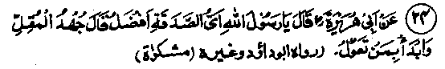
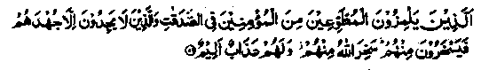
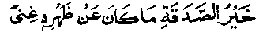

Chapter One · Section (b): Ahadith on the virtues of spending for the cause of Allah
20. Arguments on the Sadaqah given by the poor

Hadith 24
Abu Hurairah Radhiallaho anho asked Rasulullah Sallallaho alaihe wasallam, "What is the best Sadaqah?" The reply was, "The hard effort by an indigent person; a beginning must be made on those who are dependent on you."
Note: It means that the best Sadaqah is that of a needy and poor person who makes full effort to get something and then gives it as Sadaqah. Bashar Rahmatullah alaihe has said, "There are three difficult deeds, which demand a lot of courage. One, generosity in poverty. Two, piety and fear of Allah in privacy. Three, to speak the truth before a person whom one fears or expects a favour from him. That is, one may have certain interests attached to a person and the fear that, if the truth is spoken to him, it will go against those interests and may result in some harm. There is also a hint in this respect in the Holy Qur’an (as has been mentioned in the Ayat at series No. 28) about the people who give preference to others over their own urgent needs. Ali Radhiallaho anho has said that three persons came to Rasulullah Sallallaho alaihe wasallam: one of them said that he had one hundred (gold) Dinars with him and gave ten Dinars as Sadaqah; the other said that he had ten Dinars and gave one as Sadaqah; the third said that he had only one Dinar and gave one tenth of it as Sadaqah. Rasulullah Sallallaho alaihe wasallam said that all the three will get equal reward, as every one of them had given one tenth of his possessions as Sadaqah. Another Hadith quotes a similar instance and the same kind of answer by Rasulullah Sallallaho alaihe wasallam, except that he recited the Ayat which is the last Ayat in the first Ruku’ of Surah Talaaq. The Ayat means:
'One should give according to one’s capacity’. (at-Talaaq: 7)
Those who have less income should give something as Sadaqah from what Allah Ta'ala has bestowed upon them (i.e. the rich and the poor should give according to their means). Allah Ta'ala does not put anyone in hardship beyond what one can bear. The poor should not be afraid of becoming destitute if they give something as Sadaqah; Allah Ta'ala can cause easy means of living to succeed hard conditions readily enough. Rasulullah Sallallaho alaihe wasallam has gone further than this in another Hadith by saying that one Dirham begets rewards more than a hundred thousand Dirhams when a person having only two Dirhams in his possession gives one as Sadaqah and this Dirham will fetch a greater reward than a hundred thousand Dirhams given as Sadaqah by a person having plenty of wealth.
Allama Suyooti Rahmatullah alaihe has quoted Abu Zarr Radhiallaho anho in his publication, Jami-as-Saghir, as an authentic narration of Rasulullah Sallallaho alaihe wasallam that a person owning only two Dirhams but giving one as Sadaqah is an example of great sacrifice by an indigent person, as he gives in Sadaqah half of his possessions, which may amount to a few cents only. However, there is an example of still greater sacrifice in another narration by Imaam Bukhari Rahmatullah alaihe. According to him, Abdullah Ibne Mas'ood Radhiallaho anho has said, "Whenever Rasulullah Sallallaho alaihe wasallam told us to give something as Sadaqah, some of us would go to the market to do physical labour, received a ‘Mud’ of grain and gave that away as Sadaqah". In some other narrations, it has been said that the Sahabah Radhiallaho anhum, who did not possess even a Dirham, used to go to the market and request people to engage them for some physical labour. They carried heavy loads on their backs in return for a Mud of grain, which they gave away as Sadaqah. The narrator has mentioned that Abdullah Ibne Mas'ood Radhiallaho anho himself was one such Sahabi. Imaam Bukhari Rahmatullah alaihe has written a chapter entitled, "About the man who carried loads on his back to earn and gave the earnings away as Sadaqah." Could one find someone today who would go to the Railway station to carry loads on his back as a coolie and give away as Sadaqah the few annas (small coins) that he got for it! The Sahabah Radhiallaho anhum were worried about their food in the Akhirah as much as we are worried today for our food here in this life. We today would do physical labour because we have nothing to eat now, while they did physical labour thinking that they had nothing to deposit for the Akhirah! In the early days of Islam, the hypocrites used to laugh at the people who bore hardships to earn something for the sake of giving as Sadaqah. Allah Ta'ala has shown His displeasure with such hypocrites in the Qur’an"

These hypocrites are among those who laugh at the Muslims who gave as Sadaqah, particularly at those who have no other means but to work (as porters) and give away (their earnings) as alms; they are reproached by these hypocrites. Allah (Himself) reproached them and has promised a suitable return for their making fun, that on the Day of Judgment they will be laughed at by multitudes) besides the painful punishment (which awaits them and it shall never be averted or decreased). (at-Taubah: 79)
The commentators have given several Traditions concerning this Ayat. It is said that the Sahabah used to work, as porters at night, to spend the earnings as Sadaqah and even whatever they had at home was used for the purpose of Sadaqah. They utilised a bare minimum for their own needs under compulsion. Once, when a person approached Ali Radhiallaho anho for a favour, he told Hasan or Hussain Radhiallaho anhoma to ask his mother Fatimah Radhiallaho anha to give one Dirham out of the six which he had given her to keep. The son returned with the reply that he (Ali) had given those for purchasing flour. Ali Radhiallaho anho said that no one is sincere in his Imaan unless his faith in what Allah Ta'ala has promised is stronger than his belief in his worldly possessions, and told his son to ask his mother to give all the six Dirhams. Fatimah Radhiallaho anha, who had hesitated earlier only for the sake of reminding her husband of his original intention before giving away the money as Sadaqah, at once handed the money to her son for giving as Sadaqah, all of which Ali gave to the person Ali Radhiallaho anho had not moved away from the place when a man arrived there with a camel for sale. When Ali Radhiallaho anho asked the man the price of the camel, he said it was worth 140 Dirhams. Ali bought the camel, promising to pay the price a little later, A short while later, another man came and asked Ali about the owner of the camel. When Ali Radhiallaho anho said that he himself was the owner, the man asked if he wanted to sell the camel. Ali Radhiallaho anho, agreeing, indicated the price as 200 Dirhams. The man took the camel and paid Ali 200 Dirhams out of which he paid the original owner 140 Dirhams and sent the remaining 60 Dirhams to his wife Fatimah Radhiallaho anha, who asked him wherefrom the money came. Ali Radhiallaho anho replied that Allah Ta'ala, through Rasulullah Sallallaho alaihe wasallam, has promised to give ten times the reward for every single virtuous deed that is performed in this world. This is yet another example of the Sahabah’s spending out of their hard-earned money. One had only six dirhams, which were meant to buy flour for the family’s food, but when his strong faith in Allah made him spend the whole of that money for Allah’s sake, it was repaid ten-fold as the promised return in this world.
There are many similar instances in the lives of the Sahabah Radhiallaho anhum who, as a result of their strong faith in Allah Ta'ala, gave away every bit of their possessions. The story of Abu Bakr Radhiallaho anho giving Sadaqah at the time of Tabook is wellknown. When Rasulullah Sallallaho alaihe wasallam asked for contributions, he brought everything that he had at home. When Rasulullah Sallallaho alaihe wasallam asked him what he had left behind, his reply was, "Allah and His Rasul", meaning their pleasure, although, at the time of embracing Islam, Abu Bakr Radhiallaho anho had considerable wealth amounting to forty thousand gold coins. Muhammad Ibne Abbaad Mohallabi Rahmatul-lah alaihe has said that his father once visited the king (Caliph) Mamoon Rashid, who presented to him one hundred thousand Dirham; all of which he gave away as Sadaqah. The king came to know of this and showed his displeasure. His father told the king, "To withhold what one has is a mistrust in the One Who is the Lord we worship." That means, to hang on to what one has and not to spend it, for fear that when it is spent nothing may be available again, is a mistrust in the Lord who had given earlier. There are many examples of our earlier Divines who used to give as Sadaqah whatever they possessed. In contrast to these instances, there are several Ahadith which indicate a different approach. One of the well-known sayings of Rasulullah Sallallaho alaihe wasallam is:-

"The best Sadaqah is that which does not leave its giver in want".
This subject-matter forms the content of several narrations. One instance is given in Abu Dawood, narrating on the authority of Jabir Radhiallaho anho, who said that, once, while he was in company with Rasulullah Sallallaho alaihe wasallam, a man came and presented a piece of gold, the size of an egg, saying that he had found it in a mine and that he had nothing else in his possession. Rasulullah Sallallaho alaihe wasallam turned his face away from him. He came round to face Rasulullah Sallallaho alaihe wasallam and reported the same thing, but Rasulullah Sallallaho alaihe wasallam again turned his face away from him. This happened several times. Finally, Rasulullah Sallallaho alaihe wasallam picked up the piece of gold and threw it away with such force that if the man had been hit, he would have been injured. Rasulullah Sallallaho alaihe wasallam then said, "Some people give away their entire belongings and later start begging; the best Sadaqah is the one which does not leave its giver in a state of want."
Abu Saeed Khudri Radhiallaho anho has said that once a person came to Rasullullah’s Masjid, wearing clothes in poor condition. On seeing him Rasulullah Sallallaho alaihe wasallam asked people to give him clothes for Sadaqah. Several pieces of clothes were collected, out of which Rasulullah Sallallaho alaihe wasallam gave two pieces to the poor visitor. On a later occasion a similar requirement of clothes was announced by Rasulullah Sallallaho alaihe wasallam, on which the same poor man gave one of the two pieces as Sadaqah. Rasulullah Sallallaho alaihe wasallam showed his displeasure and returned the piece to him.
In another Hadith, the same situation has been mentioned where Rasulullah Sallallaho alaihe wasallam remarked, "The man had come to the Masjid in a very bad condition and I had thought people would do something for him on their own. Since nothing happened, I asked those present to give something as Sadaqah; some clothes were brought and I gave two pieces to the needy person; he gave one piece as Sadaqah when another needy person came, but I returned his piece to him". In another Hadith, the saying of Rasulullah Sallallaho alaihe wasallam has been repeated that some people give all their belongings as Sadaqah and then sit back expecting other people’s generosity; the best Sadaqah is when the feeling of want does not arise afterwards. Another Hadith says that no Sadaqah is valid without freedom from want. This may appear opposite to what has been said in the earlier Ahadith, but in fact it is not so, as Rasulullah Sallallaho alaihe wasallam has not said here anything against those but has only indicated that it is improper to give away all the belongings as Sadaqah and then expect others to give you something. However, this does not matter for those who rely far more on what Allah Ta'ala has in store than on their own belongings; like the instance of Ali Radhiallaho anho mentioned above or that of Abu Bakr Radhiallaho anho, which explains the case better. By all means one may go on trying to attain the level of those great personages, so as to have a similar degree of reliance on Allah Ta'ala, without any attachment to the world, as they did. The sincere effort to acquire anything is invariably rewarded by Allah Ta'ala, as is the sayingmeaning, whoever tries receives reward. Someone asked a divine how much Zakaat was to be paid from a certain amount. The reply was, "For a common Muslim, five Dirhams out of two hundred Dirhams, but for us the total amount should be given away as Sadaqah". We may mention here the remarks of Rasulullah Sallallaho alaihe wasallam under Sr. No 1, in the series of Ahadith that, "If the entire mountain of Uhad becomes gold, he would not like to keep a Dirham out of it, except what was required to pay a debt". For this reason Rasulullah Sallallaho alaihe wasallam once rushed to his residence after Asr Salaat and ordered the giving away as Sadaqah of the piece of gold which, by chance, had been left over; and as mentioned in Ahadith at No. 4, he felt upset during his illness because of a small amount of money that was lying in his home.
Imaam Bukhari Rahmatullah alaihe has mentioned in his famous book," Sahih Bukhari’, that Sadaqah is improper without freedom from want and that Sadaqah given in a state of want will not be acceptable. If one is in debt, the debt must be cleared first or, when one is needy or his family is indigent, these must be taken care of first. However, if someone is well-known for patience and fortitude and is able to ignore his own needs, like Abu Bakr Radhiallaho anho and the Ansaar Radhiallaho anhum who gave preference to Muhaji-reen over their own needs, such cases could be treated as exceptions. Allama Tabri Rahmatullah alaihe has said that the majority of Ulama allow a person to give all his property as Sadaqah, provided he is not in debt, nor feels any hardship in doing this, and either has no dependents or they are also agreeable, in which case Sadaqah will be admissible. If however any of these conditions is not satisfied, the Sadaqah is better avoided. (Fateh). Shah Waliullah Rahmatullah alaihe has said that the Hadith, saying that Sadaqah is valid only with freedom from want, indicates a feeling of freedom from want in the heart of the person who gives Sadaqah. This is in line with another saying of Rasulullah Sallallaho alaihe wasallam that freedom from want does not come from the excess in property but is a condition of the heart. (Mishkaat)
The instance of the man who wished to give a piece of gold as Sadaqah, but repeatedly said that it was all that he possessed, is an example indicating that he had some reluctance in his heart to part with the piece of gold. The writer of the Mazahir has said that it is obligatory that Sadaqah must accompany freedom from want; even when there is only a feeling of freedom from want in the heart, it would amount to complete reliance on Allah Ta'ala. Such was the case of Abu Bakr Radhiallaho anho who had given all his belongings for the sake of Allah and .when Rasulullah Sallallaho alaihe wasallam asked him as to what he had left for family he replied, "Allah Ta'ala and His Rasul". Rasulullah appreciated this reply. If this level of freedom from want is not present, then possession of some property remains essential. It may be deduced from all this that, in the presence of perfect trust in Allah Ta'ala, one may spend in Sadaqah as much as one likes. In the absence of this trust, the family’s needs are to be given preference. However, one should remain mindful of this weakness and keep admonishing oneself for lack of trust in Allah Ta’ala, as against too much reliance on the worldly means. Insha-Allah, by repeated self-admonishment, the desired results will be obtainable.